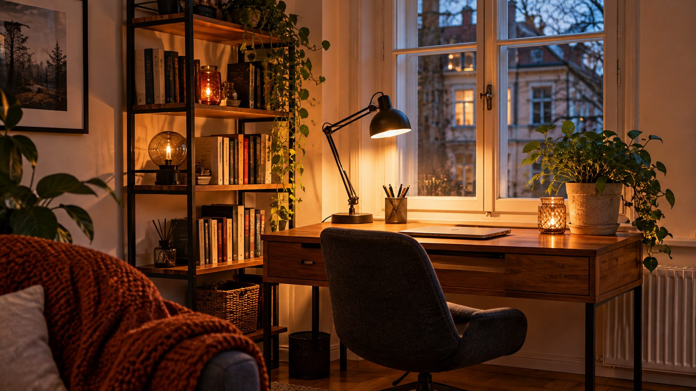
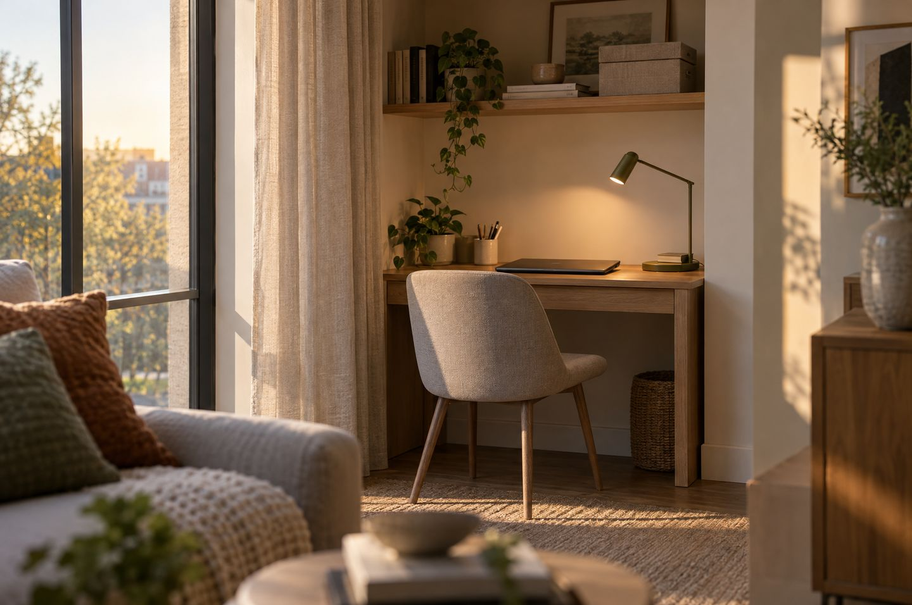

Stell die Arbeitsecke an einen hellen Platz am Fenster oder in eine Nische, damit du sie vom Sofa aus nicht ständig siehst. Die Standardhöhe eines Schreibtischs ist 72 cm, ein Eckschreibtisch sollte mindestens 80 cm tief sein. Regal, Sideboard oder Paravent trennen Arbeiten und Wohnen, nach Feierabend verschwinden Drucker und Papiere in Schubladen.
Die wichtigsten Maße.
Damit du bequem sitzt und genug Platz hast.
Bist du deutlich kleiner oder größer, lohnt ein höhenverstellbarer Schreibtisch.
In fünf Schritten zur Arbeitsecke.
Hellen Platz wählen
Am besten am Fenster, Tageslicht ist ideal. Ist es zu hell, helfen leichte Vorhänge. Eine Nische hat den Vorteil, dass du den Arbeitsplatz vom Sofa aus nicht ständig im Blick hast.
Gute Schreibtischlampe
Für dunkle Nachmittage und Abende. Wie Grund-, Arbeits- und Stimmungslicht zusammenspielen, steht unter Licht planen.
Arbeiten und Wohnen trennen
Ein offenes Regal, ein Sideboard, ein Paravent oder große Pflanzen schaffen eine Grenze, ohne den Raum zu teilen.
Stauraum in die Höhe
Hohe, helle Regale oder Schränke bis zur Decke nehmen viel auf und wirken leicht. Dokumente auf der einen, Laptop auf der anderen Seite des Tischs.
Feierabend sichtbar machen
Drucker, Scanner und Papiere nach der Arbeit in Schubladen oder Boxen verstauen. Wenig Material? Dann reicht ein kleiner Sekretär, oft günstig vom Flohmarkt und neu lackiert.

Checkliste.
Hak ab, was du schon hast. Der Stand bleibt nur in deinem Browser.
Für die Arbeitsecke.
Platzsparend und wohnlich. Die Links führen zu einer Suche bei AmazonAnzeige
Häufige Fragen.
Wie hoch muss ein Schreibtisch sein?
Die Standardhöhe ist 72 cm. Bei 1,75 m Körpergröße passen etwa 71 cm Tisch- und 47 cm Sitzhöhe. Sonst lohnt ein höhenverstellbarer Tisch.
Wo im Wohnzimmer arbeite ich am besten?
An einem hellen Platz am Fenster oder in einer Nische, die man vom Sofa aus nicht direkt sieht.
Wie trenne ich Arbeit und Wohnen?
Mit einem offenen Regal, einem Sideboard, einem Paravent oder Pflanzen. Und indem du Arbeitsmaterial nach Feierabend verstaust.
Passt das zur Mietwohnung?
Ja, alles hier kommt ohne Umbau aus. Hohe Regale solltest du gegen Kippen sichern. Was beim Bohren gilt, steht unter Schöner wohnen zur Miete.